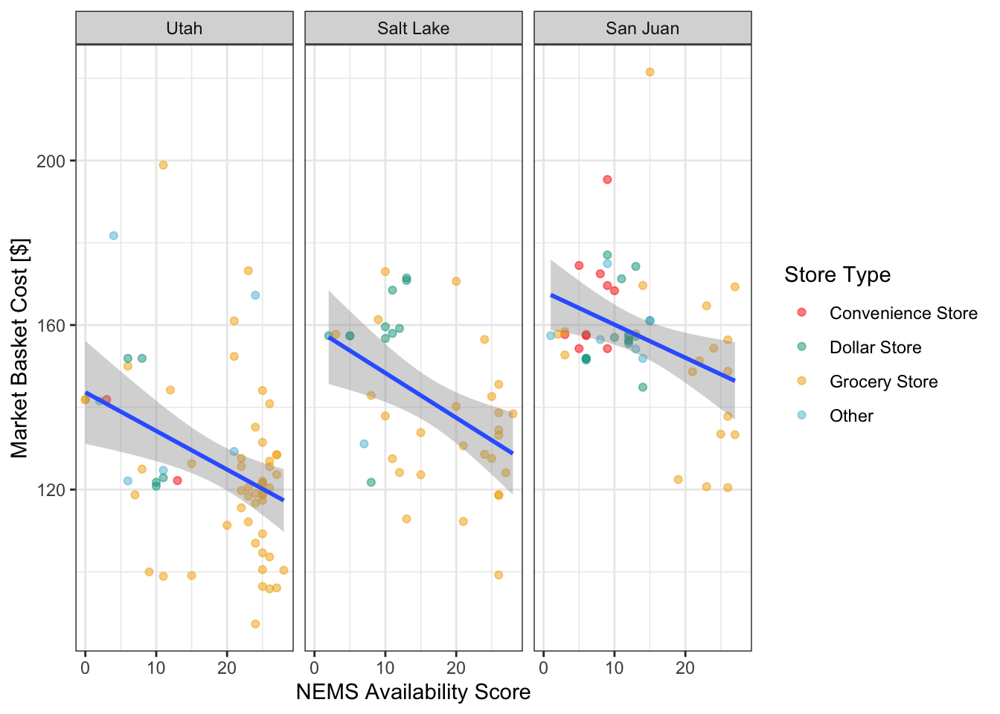
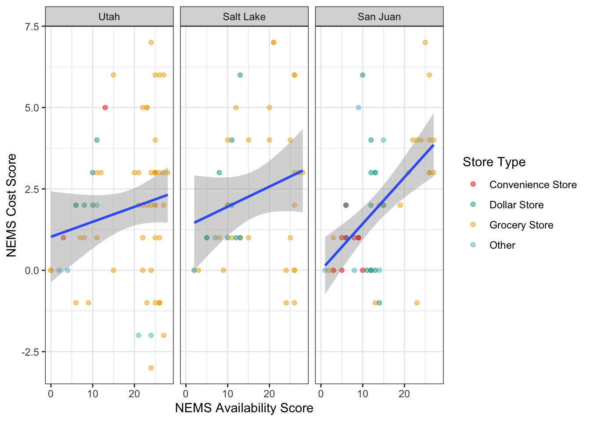
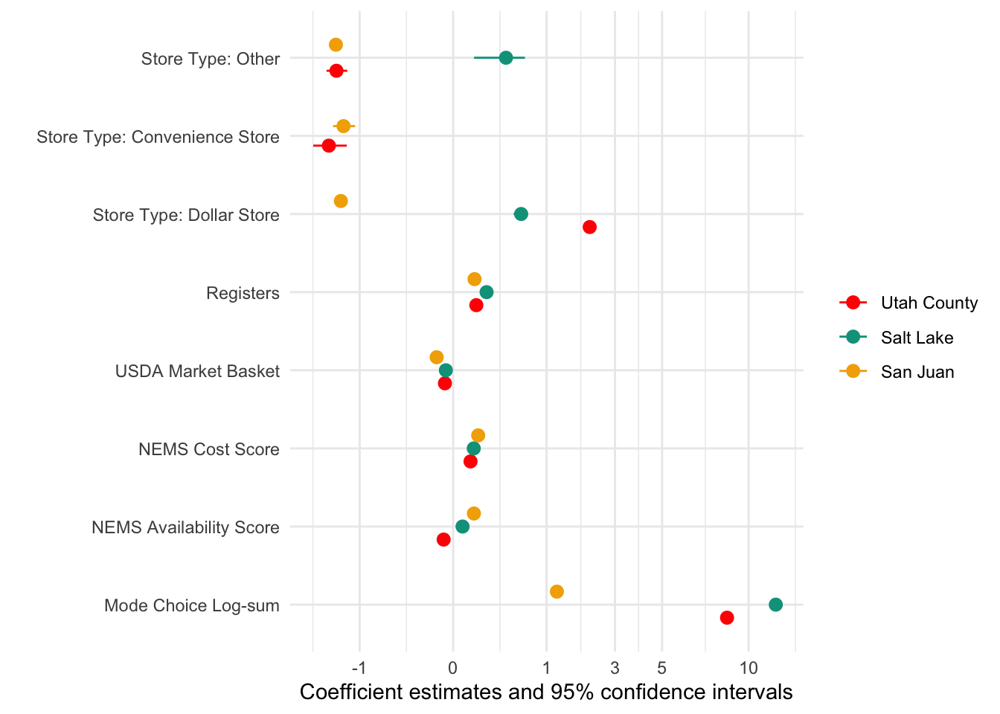
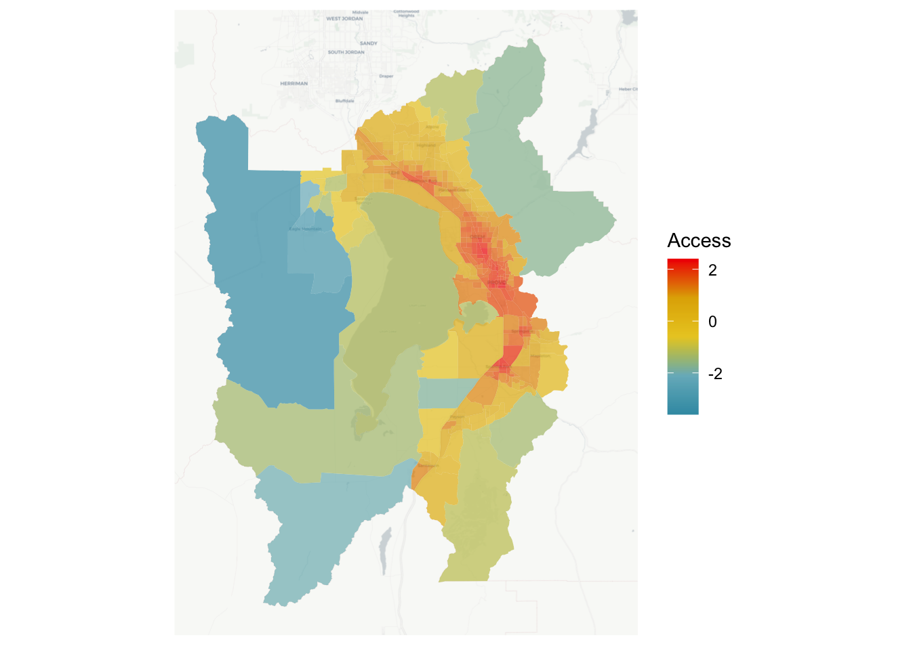
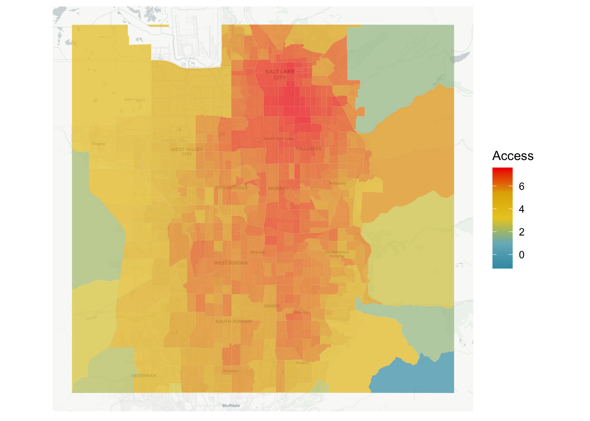
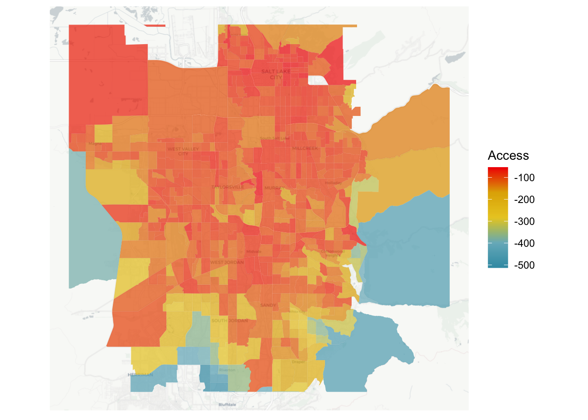

tar_load(nems_groceries)
nems_groceries <- nems_groceries |>
ungroup() |>
mutate(
type = ifelse(type == "Trading Post", "Other", type),
inflation = ifelse(county == "Utah", market * 1.094, market),
county = factor(county, levels = c("Utah", "Salt Lake", "San Juan"))
)4 Results
This section presents results on the nutrition environment in each of the three communities of Utah County, West Salt Lake County, and San Juan County, along with destination choice model estimates and their application to creating accessibility maps of each community and the entire state of Utah.
4.1 Nutrition Environment
Though some basic descriptive statistics of the grocery store attributes were presented in Table 3.2, some additional exploration of these attributes is valuable to understand the nutrition environment in these three communities.
ggplot(nems_groceries, aes(x = availability, y = market, group = county)) +
geom_point(alpha = 0.5, mapping = aes(color = type)) +
geom_smooth(method = "lm") +
facet_grid(~county) +
theme_bw() + xlab("NEMS Availability Score") +
ylab("Market Basket Cost [$]") +
scale_color_manual("Store Type", values = wesanderson::wes_palette('Darjeeling1')[c(1:3, 5)])`geom_smooth()` using formula = 'y ~ x'
Figure 4.1 presents the relationship between the recorded NEMS availability score and the USDA market basket cost at the stores by community and store type. In all three communities, the relationship is strongly negative, with stores that stock more varieties of goods also having overall lower prices for those goods. This is emphasized by the bottom-right quadrants of these plots (high availability, low-cost) being dominated by full-service grocery stores, which have more availability and lower prices than convenience stores or dollar stores, but require higher traffic and demand to make up for their lower profit margins. Average prices in Utah County are lower than prices in the other two communities across the availability spectrum; this is true even after adjusting for 9.4% annual inflation between March 2021 and March 2022 in food products (Bureau of Labor Statistics, 2023).
ggplot(nems_groceries, aes(x = availability, y = cost)) +
geom_point(alpha = 0.5, mapping = aes(color = type)) +
geom_smooth(method = "lm") +
facet_grid(~county) +
theme_bw() + xlab("NEMS Availability Score") +
ylab("NEMS Cost Score") +
scale_color_manual("Store Type", values = wesanderson::wes_palette('Darjeeling1')[c(1:3, 5)])`geom_smooth()` using formula = 'y ~ x'
Figure 4.2 shows the relationship between the NEMS availability and cost scores. In this case the relationship is generally positive, with stores that stock more healthful options also placing these options at competitive prices. Conversely, stores with fewer options tend to place the options they do stock at a higher price point. This relationship between availability and cost of healthful goods is strongest in San Juan County, with convenience stores anchoring the low-availability, high-premium quadrant for healthy food. It should be noted that these convenience stores also exist in the Utah County community, but we explicitly included them in the San Juan data collection as they are the only food markets of any kind in multiple towns, with dozens of miles separating towns from each other.
4.2 Destination Choice
Using the data collected and MNL destination choice model as described in Chapter 3, we estimate a series of model specifications in each community with the mlogit package for R (Croissant, 2020). To illustrate the role of different data elements on destination choice, we develop and estimate four different utility equations: \begin{align*}
\mathrm{Access} &= \beta_{MCLS}( k_{ij})\\
\mathrm{NEMS} &= \beta_{n-a} (\mathrm{NEMS-Availability}) + \beta_{n-c}\mathrm({NEMS-Cost})\\
\mathrm{Attributes} &= \beta_{mkt} (\mathrm{Market Basket}) + \mathbf{\beta}_{type}(\mathrm{Type})\\
\mathrm{All} &= \mathrm{Access} + \mathrm{NEMS} + \mathrm{Attributes}\\
\end{align*} The Access model includes only the mode choice logsum described in Equation 3.4. The NEMS model includes the NEMS cost and availability scores describing the goods the store offers, while the Attributes model contains information that might be more conventionally available to shoppers including the size, type, and average prices at the store. As the nutrition environment in each community contains different types of stores, the specific type coefficients differ by community. The All model contains all of the other three sets of estimated coefficients.
tar_load(sl_models)
tar_load(ut_models)
tar_load(sj_models)modelsummary(ut_models, gof_map = gm, coef_map = cm,
stars = c('*' = 0.05, '**' = 0.01),
statistic = "({statistic})",
notes = list("t-statistics in parentheses"))| Access | NEMS | Attributes | All | |
|---|---|---|---|---|
| Mode Choice Log-sum | 8.090** | 8.592** | ||
| (95.354) | (87.875) | |||
| NEMS Availability Score | 0.034** | −0.010** | ||
| (23.136) | (−3.191) | |||
| NEMS Cost Score | 0.029** | 0.035** | ||
| (6.344) | (5.075) | |||
| USDA Market Basket | −0.007** | −0.008** | ||
| (−8.943) | (−8.756) | |||
| Registers | 0.057** | 0.062** | ||
| (55.241) | (39.579) | |||
| Store Type: Dollar Store | 1.955** | 2.136** | ||
| (57.226) | (41.639) | |||
| Store Type: Convenience Store | −1.637** | −1.769** | ||
| (−7.256) | (−7.351) | |||
| Store Type: Other | −1.604** | −1.560** | ||
| (−12.267) | (−11.076) | |||
| AIC | 31,798.55 | 49,021.43 | 42,045.1 | 25,587.52 |
| $\rho^2_0$ | 0.36 | 0.014 | 0.154 | 0.485 |
| * p < 0.05, ** p < 0.01 | ||||
| t-statistics in parentheses |
Table 4.1 presents the estimated coefficients in the Utah County community. In general, the utility coefficients are statistically significant and in a direction that would be expected by informed hypothesis. The Access model has a positive coefficient on its mode choice log-sum term, which indicates that as the mode choice logsum between a block group and a store increases — indicating lower travel costs between Census block groups and the store, because travel times in Equation 3.4 have a negative relationship with utility — a higher proportion of mobile devices residing in that block group are observed to travel to that store. The NEMS model shows a positive relationship between both environment variables and utility, indicating that people are more likely to choose stores with higher availability of healthy goods and more advantagous prices for those goods, all else equal. The Attributes model suggests that
people are less willing to visit stores with higher prices, fewer registers, and convenience stores or other non-standard grocery stores with the exception of dollar stores, which they are more attracted to. Combining all of these variables in the All model retain the significance, direction, and basic scale of all previous estimates with the exception of the NEMS availability variable. In this case, it seems that the previous positive relationship may have been a result of correlation between NEMS availability and other variables such as cost or the number of registers. And when controlling for all other variables, the role of transportation access becomes somewhat more important than considering only distance alone, implying that people are willing to travel somewhat further for stores with attributes they value.
The overall fit of the four models in Table 4.1 is also revealing: the model with only NEMS variables against almost no predictive power over randomly selecting any store in the community (as revealed by the \rho_0^2 statistic). Though all sets of variables contribute to the overall fit, it is apparent that the bulk of model explanatory power is due to transportation proximity.
modelsummary(sl_models, gof_map = gm, coef_map = cm,
stars = c('*' = 0.05, '**' = 0.01),
statistic = "({statistic})",
notes = list("t-statistics in parentheses"))| Access | NEMS | Attributes | All | |
|---|---|---|---|---|
| Mode Choice Log-sum | 9.767** | 11.924** | ||
| (73.003) | (73.366) | |||
| NEMS Availability Score | 0.135** | 0.010** | ||
| (73.114) | (2.627) | |||
| NEMS Cost Score | −0.039** | 0.049** | ||
| (−8.534) | (8.223) | |||
| USDA Market Basket | −0.009** | −0.006** | ||
| (−12.442) | (−6.686) | |||
| Registers | 0.106** | 0.128** | ||
| (71.242) | (51.661) | |||
| Store Type: Dollar Store | 0.301** | 0.530** | ||
| (6.618) | (9.354) | |||
| Store Type: Other | −0.024 | 0.320* | ||
| (−0.184) | (2.323) | |||
| AIC | 43,025.99 | 42,037.02 | 39,775.88 | 31,636.5 |
| $\rho^2_0$ | 0.134 | 0.154 | 0.2 | 0.364 |
| * p < 0.05, ** p < 0.01 | ||||
| t-statistics in parentheses |
modelsummary(sj_models, gof_map = gm, coef_map = cm,
stars = c('*' = 0.05, '**' = 0.01),
statistic = "({statistic})",
notes = list("t-statistics in parentheses"))| Access | NEMS | Attributes | All | |
|---|---|---|---|---|
| Mode Choice Log-sum | 0.732** | 1.233** | ||
| (83.411) | (74.178) | |||
| NEMS Availability Score | 0.134** | 0.049** | ||
| (61.893) | (10.191) | |||
| NEMS Cost Score | 0.249** | 0.072** | ||
| (38.689) | (8.690) | |||
| USDA Market Basket | −0.010** | −0.031** | ||
| (−13.568) | (−23.484) | |||
| Registers | 0.022** | 0.052** | ||
| (20.793) | (27.317) | |||
| Store Type: Dollar Store | −2.126** | −1.443** | ||
| (−47.105) | (−20.779) | |||
| Store Type: Convenience Store | −3.720** | −1.376** | ||
| (−31.352) | (−9.810) | |||
| Store Type: Other | −1.567** | −1.574** | ||
| (−29.544) | (−22.209) | |||
| AIC | 40,351.12 | 35,021.59 | 37,361.16 | 23,143.56 |
| $\rho^2_0$ | 0.188 | 0.295 | 0.248 | 0.535 |
| * p < 0.05, ** p < 0.01 | ||||
| t-statistics in parentheses |
Table 4.2 presents the estimated coefficients in the west Salt Lake Valley community, and Table 4.3 presents the estimated coefficients in San Juan County. The same general story about coefficient direction and hypotheses applies in both of these communities, except in regards to the NEMS variables. In Salt Lake, the NEMS cost score appears negative when estimated alone but becomes positive when other variables are included. In San Juan, these variables are consistently positive. Additionally, the story of model fit is reversed: in both Salt Lake and San Juan, the attributes of the store explain more of the model fit than the transportation impedance term.
# use a square root transformation, but have it work in both directions.
absqrt <- scales::trans_new(
"absqrt",
function(x){sign(x) * sqrt(abs(x))},
function(x){sign(x) * x^2},
breaks = scales::extended_breaks(),
minor_breaks = scales::regular_minor_breaks(),
format = scales::format_format(),
domain = c(-Inf, Inf)
)
list(
"Utah County" = ut_models[["All"]],
"Salt Lake" = sl_models[["All"]],
"San Juan" = sj_models[["All"]]
) |>
modelplot(coef_map = cm) +
scale_x_continuous(trans = absqrt, breaks = c(-1, 0, 1, 3, 5, 10)) +
scale_color_manual(values = wesanderson::wes_palette('Darjeeling1'))
To better visualize how the preferences in the three communities differ from each other, Figure 4.3 plots the coefficient estimates from the All model in each community. The mode choice log-sum is strongly significant in all three communities, but it has its smallest value in San Juan County where people often must travel long distances to reach any stores. The highest mode choice log-sum value is in Salt Lake, but this explains a smaller proportion of the model outcomes than the lower value in Utah County; a possible hypothesis for this observation may include the higher density of stores in Salt Lake — attributes are more important when so many stores are close together — paired with the somewhat lower vehicle ownership in that community driving up the coefficient value. Most other estimates are somewhat consistent across counties, with the exception of the NEMS variables discussed previously and the role of dollar stores and other stores in each community.
4.3 Accessibility
tar_load(utbgaccess)With the models estimated in Section 4.2, we can evaluate the spatial access of each community. Figure 4.4 shows the value of the grocery store destination choice log-sum for block groups in Utah County. Unsurprisingly, the block groups in the core of the urban areas of the region have the highest access to grocery stores, because this is where the stores are located and also where the transportation access to multiple destinations is highest. This map also contains somewhat interesting implications for the equity of access. A perhaps unique feature of Utah County’s demographic geography is that the wealthiest neighborhoods tend to be located on the mountain benches east of the main urban areas. This means that in Utah County, at least, the neighborhoods with the lowest access to grocery stores are actually some of the wealthiest neighborhoods with the lowest concentrations of ethnic minorities in the region.
pal <- wesanderson::wes_palette("Zissou1", 100, type = "continuous")
ggplot(utbgaccess, aes(fill = access)) +
ggspatial::annotation_map_tile("cartolight", zoom = 11) +
geom_sf(alpha = 0.7, lwd = 0) +
theme(axis.text.x = element_blank(),
axis.ticks.x = element_blank(),
axis.text.y = element_blank(),
axis.ticks.y = element_blank()) +
scale_fill_gradientn("Access", colours = pal)Loading required namespace: rasterThe legacy packages maptools, rgdal, and rgeos, underpinning the sp package,
which was just loaded, will retire in October 2023.
Please refer to R-spatial evolution reports for details, especially
https://r-spatial.org/r/2023/05/15/evolution4.html.
It may be desirable to make the sf package available;
package maintainers should consider adding sf to Suggests:.
The sp package is now running under evolution status 2
(status 2 uses the sf package in place of rgdal)Please note that rgdal will be retired during October 2023,
plan transition to sf/stars/terra functions using GDAL and PROJ
at your earliest convenience.
See https://r-spatial.org/r/2023/05/15/evolution4.html and https://github.com/r-spatial/evolution
rgdal: version: 1.6-7, (SVN revision 1203)
Geospatial Data Abstraction Library extensions to R successfully loaded
Loaded GDAL runtime: GDAL 3.5.3, released 2022/10/21
Path to GDAL shared files: /Library/Frameworks/R.framework/Versions/4.3-arm64/Resources/library/rgdal/gdal
GDAL does not use iconv for recoding strings.
GDAL binary built with GEOS: TRUE
Loaded PROJ runtime: Rel. 9.1.0, September 1st, 2022, [PJ_VERSION: 910]
Path to PROJ shared files: /Library/Frameworks/R.framework/Versions/4.3-arm64/Resources/library/rgdal/proj
PROJ CDN enabled: FALSE
Linking to sp version:1.6-1
To mute warnings of possible GDAL/OSR exportToProj4() degradation,
use options("rgdal_show_exportToProj4_warnings"="none") before loading sp or rgdal.Zoom: 11
Of course, much of this high access in the urban core of Utah County is achieved by cheap and available automobile transportation. We can consider what access looks like for those without cars by re-computing the mode choice log-sum described in Section 3.2.3 between all block group / store pairs but eliding the automobile mode, and examining the resulting impact to destination choice utility. Figure 4.5 shows the results of this analysis: whereas the total access (with car included) is a smooth gradient across the valley, the access for individuals without vehicles is blocky and discontinuous, with neighborhoods of relatively good access immediately next to neighborhoods with bad or non-existent access. This may reflect the discontinuous nature of active transport and public transit facilities in the region, as well as the auto-dominated locations of many grocery stores. Note also that even for neighborhoods of relatively good non-vehicle access, the destination choice log-sum value is substantially lower than the logsum with vehicle access; the minimum value on with vehicles is just below 0, whereas the maximum log-sum without vehicles is around -100. Because the log-sum occurs on the same scale in both cases, this represents a serious additional cost for non-vehicle users.
tar_load(nocaraccess)
ggplot(nocaraccess, aes(fill = dclogsum)) +
ggspatial::annotation_map_tile(type = "cartolight", zoom = 12) +
geom_sf(lwd = 0, alpha = 0.7) +
scale_x_continuous(limits = c(-112.11, -111.7)) +
scale_y_continuous(limits = c(40.5, 40.8)) +
theme(axis.text.x = element_blank(),
axis.ticks.x = element_blank(),
axis.text.y = element_blank(),
axis.ticks.y = element_blank()) +
scale_fill_gradientn("Access", colours = pal)Zoom: 12ggplot(nocaraccess |> filter(!is.na(nocarlogsum)), aes(fill = nocarlogsum)) +
ggspatial::annotation_map_tile(type = "cartolight", zoom = 12) +
geom_sf(lwd = 0, alpha = 0.7) +
scale_x_continuous(limits = c(-112.11, -111.7)) +
scale_y_continuous(limits = c(40.5, 40.8)) +
theme(axis.text.x = element_blank(),
axis.ticks.x = element_blank(),
axis.text.y = element_blank(),
axis.ticks.y = element_blank()) +
scale_fill_gradientn("Access", colours = pal)Zoom: 12
